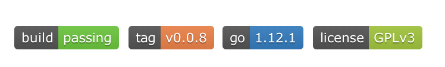
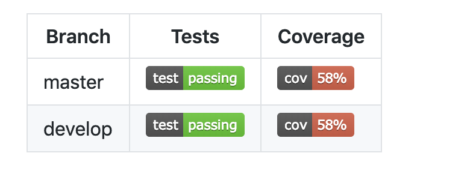

模板¶
1 项目名称¶
代码示例
1 | # Tendermint |
2 徽章¶
例如

代码示例
1 2 3 4 |  [](https://github.com/trias-lab/gondwana/releases/tag/v0.0.8) [](https://github.com/moovweb/gvm) [](https://github.com/trias-lab/gondwana/blob/master/LICENSE) |
3 测试¶
例如

代码示例
1 2 3 4 | | Branch | Tests | Coverage | | ------- | --------------------------------------------------------------------- | ------------------------------------------------------------------- | | master |  |  | | develop |  |  | |
4 项目简介¶
5 重要内容 (通用部分)¶
1 2 3 4 5 6 7 8 9 10 11 12 13 14 | ## A Note on Production Readiness While Trias is being used in production in private, permissioned environments, we are still working actively to harden and audit it in preparation for use in public blockchains. We are also still making breaking changes to the protocol and the APIs. Thus, we tag the releases as *alpha software*. In any case, if you intend to run Trias in production, please [contact us](mailto:contact@trias.one) and [join the chat](https://www.trias.one). ## Security To report a security vulnerability, [bug report](mailto:contact@trias.one) |
6 文档¶
6.1 website (通用部分)¶
1 2 3 | ## Documentation Complete documentation can be found on the [website](https://github.com/trias-lab/Documentation). |
6.2 Install¶
1 2 3 | ### Install 此处是说明或文档链接 |
6.3 Quick Start¶
1 2 3 | ### Quick Start 此处是说明或文档链接 |
7 贡献 (通用部分)¶
1 2 3 4 5 6 7 8 9 10 11 12 13 14 15 16 17 18 19 20 21 22 | ## Contributing All code contributions and document maintenance are temporarily responsible for TriasLab Trias are now developing at a high speed and we are looking forward to working with quality partners who are interested in Trias. If you want to join.Please contact us: - [Telegram](https://t.me/triaslab) - [Medium](https://medium.com/@Triaslab) - [BiYong](https://0.plus/#/triaslab) - [Twitter](https://twitter.com/triaslab) - [Gitbub](https://github.com/trias-lab/Documentation) - [Reddit](https://www.reddit.com/r/Trias_Lab) - [More](https://www.trias.one/) - [Email](mailto:contact@trias.one) ### Upgrades Trias is responsible for the code and documentation upgrades for all Trias modules. In an effort to avoid accumulating technical debt prior to Beta, we do not guarantee that data breaking changes (ie. bumps in the MINOR version) will work with existing Trias blockchains. In these cases you will have to start a new blockchain, or write something custom to get the old data into the new chain. |
8 资源 (通用部分)¶
1 2 3 4 5 6 7 8 | ## Resources ### Research * [The latest paper](https://www.contact@trias.one/attachment/Trias-whitepaper%20attachments.zip) * [Project process](https://trias.one/updates/project) * [Original Whitepaper](https://trias.one/whitepaper) * [News room](https://trias.one/updates/recent) |